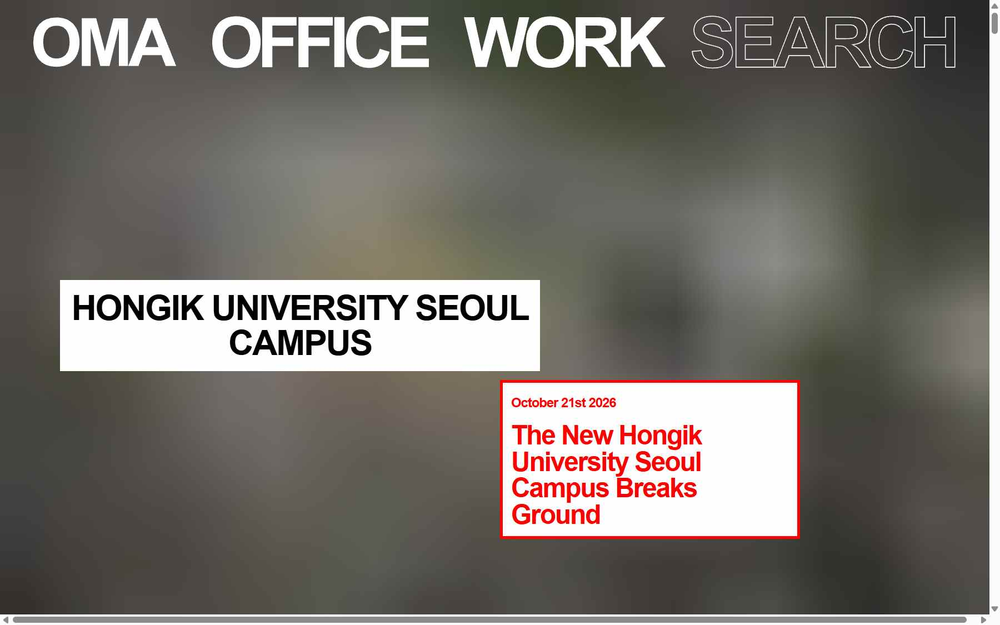
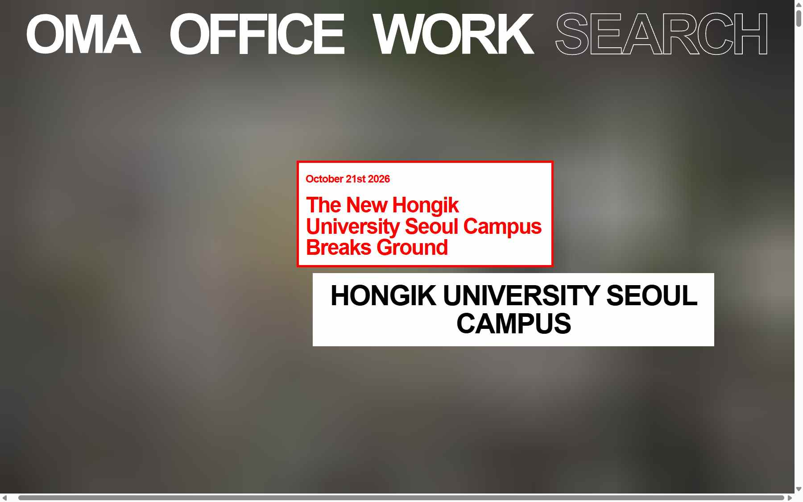
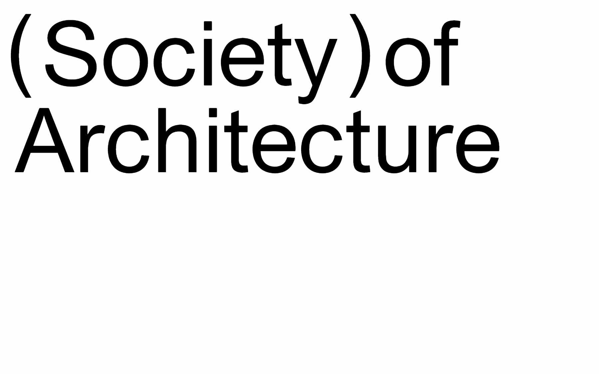
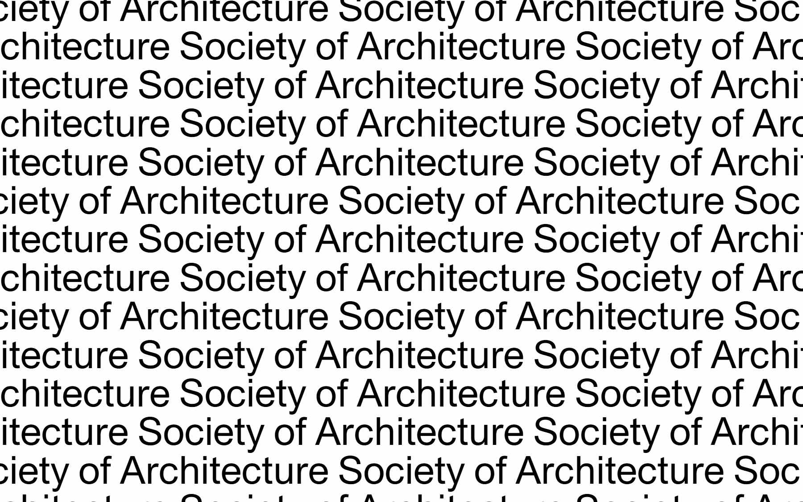
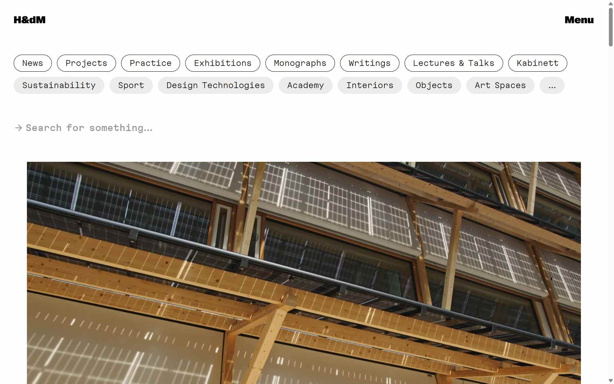
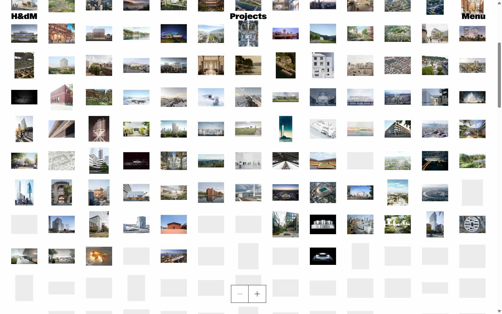
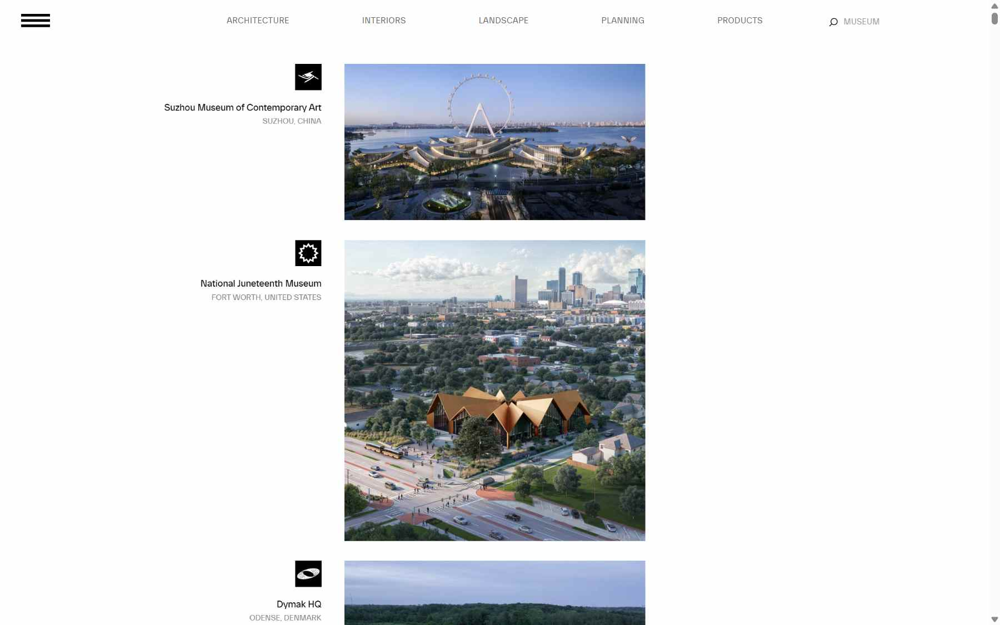
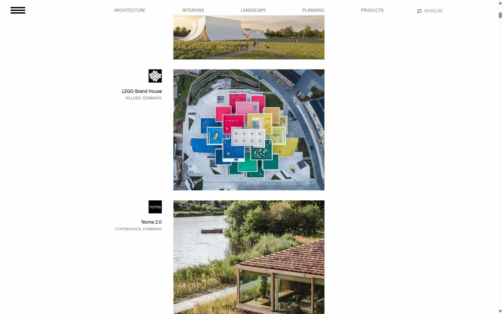

"풀이미지 + 메뉴 + 그리드"라는 공식 자체를 버린 건축·디자인 스튜디오 사이트를 패러다임별로 모았습니다. 각 사례마다 "무엇을 버렸고, 대신 무엇으로 길을 찾게 하는지"를 적었고, 마지막에 DARUDA v3로 옮길 수 있는 방향 네 가지를 제안합니다. 캡처는 2026-10-21 실제 화면(1,800px 폭)입니다.
01거대 타이포가 곧 메뉴 — 사진을 첫 화면에서 치운다
첫 화면에 사진이 없다. 네 단어가 화면 폭을 다 쓰고, 콘텐츠는 가로로 25,000px 이어진다.


로테르담건축★ 가장 급진적
OMA
oma.com
화면 상단에 OMA · OFFICE · WORK · SEARCH 네 단어가 거대한 Arial Bold로. SEARCH만 아웃라인. 이것이 메뉴의 전부.
배경은 블러 처리된 사진 한 장. 그 위에 흰 박스(프로젝트명), 빨간 테두리 박스(뉴스)가 흩어져 있고, 가로 스크롤로 끝없이 이어집니다.
버린 것: 썸네일 그리드, 상단 바, 세로 스크롤. 대신 얻은 것: 한 번 보면 잊히지 않는 첫인상, 모든 콘텐츠가 '한 장의 긴 벽'.
DARUDA 적용 → DARUDA / ABOUT / ARCHIVE / PRESS / CONTACT 다섯 단어를 화면 폭에 꽉 채우고, 기획안의 '흰 사각형'을 OMA의 흰 박스처럼 사진 위에 흩뿌린다.
위험: 모바일에서 가로 스크롤은 세로로 바꿔야 하고, 첫 방문자에게 "어디를 눌러야 하나"가 2초쯤 걸린다.


서울건축국내
Society of Architecture (SoA)
societyofarchitecture.com
첫 화면이 "(Society) of Architecture" 글자뿐. 새로고침할 때마다 글자 크기·반복 패턴이 바뀌는 아이덴티티 페이지(new_identity-2, -6 …)로 랜딩합니다.
사진·메뉴·설명 전부 없음. 로고타입 자체가 포스터이고, 클릭해야 비로소 사이트로 들어갑니다.
DARUDA 적용 → 'DARUDA'를 화면에 반복·변주하는 랜딩 인트로. v1의 'U' 마커·아웃라인 P/A 아이디어를 여기서 제대로 쓸 수 있다.
02썸네일 벽 · 아이콘 카탈로그 — 모든 프로젝트를 한 화면에
"대표작 몇 개"가 아니라 전체 아카이브를 통째로 보여준다. 줌으로 밀도를 조절한다.


바젤건축★ 아카이브형 1순위
Herzog & de Meuron
herzogdemeuron.com
Projects 페이지: 수백 개 프로젝트가 작은 썸네일로 빼곡한 벽. 하단 가운데 − / + 버튼으로 밀도를 바꿉니다(컨택트 시트처럼).
첫 화면은 둥근 태그 칩(News, Projects, Practice… Interiors, Objects)과 "Search for something…" 한 줄. 메뉴가 곧 검색어.
폰트는 모노스페이스 계열. 사진보다 '정보 시스템'처럼 보이게 하는 선택.
DARUDA 적용 → 53개 완료 프로젝트를 전부 썸네일 벽으로. ( 53 ) 숫자가 그대로 화면이 된다. −/+ 줌, 칩 필터 living / commercial / 2024 / 2025.


코펜하겐건축·인테리어
BIG — Bjarke Ingels Group
big.dk
화면 가운데 좁은 한 열. 각 프로젝트마다 검정 바탕의 작은 다이어그램 아이콘 + 이름 + 도시가 왼쪽에, 사진이 오른쪽에. 사진 없이 아이콘만으로도 프로젝트가 구분됩니다.